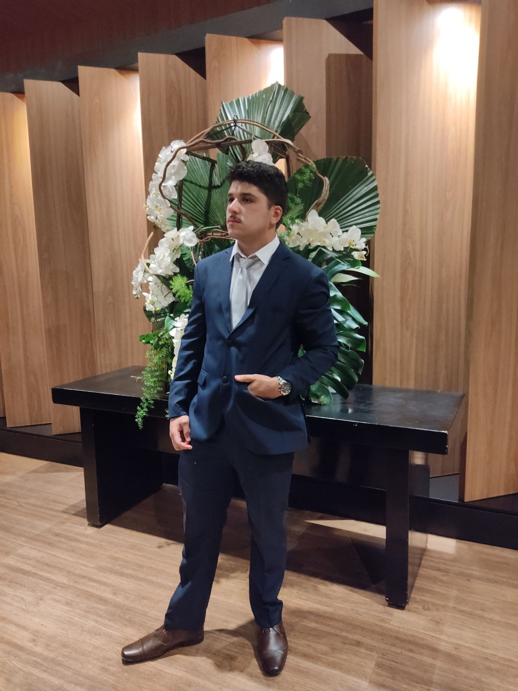

Quem eu sou?

Nascido em 27 de maio de 2001, sempre gostei de computadores. No entanto, ao me formar em 2018, acabei optando pela área do direito como minha primeira carreira. Com o tempo, percebi que essa não era a minha vocação e, com maturidade suficiente para saber o que realmente queria, decidi seguir meu sonho de me tornar um cientista da computação. Além da programação, uma das minhas maiores paixões é a leitura, pois acredito piamente que o saber adquirido é a única coisa que niguém jamais ira tirar de você. Devido a minha curiosidade inata, me tornei auto-didata e apaixonado pelo conhecimento.